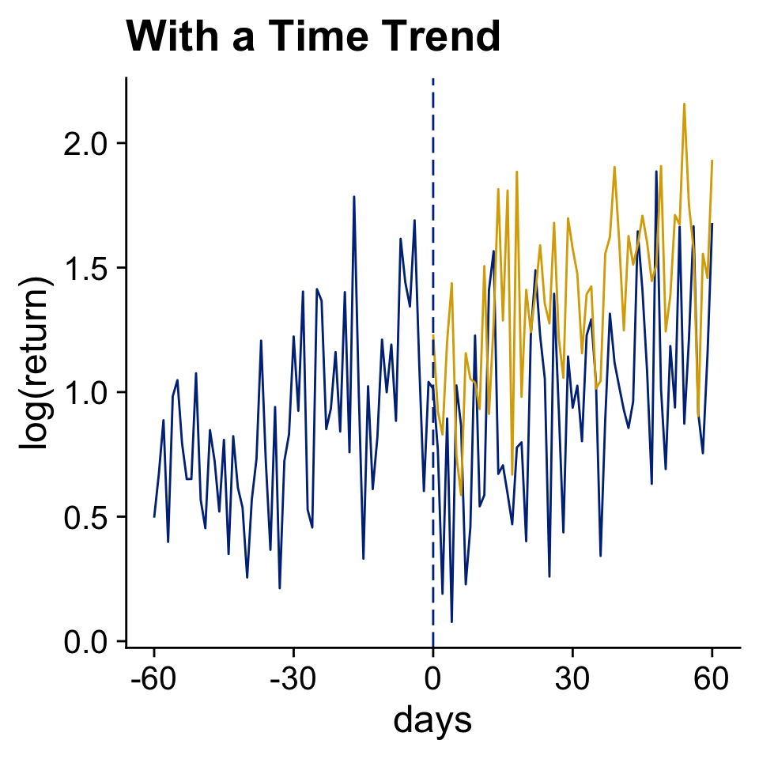
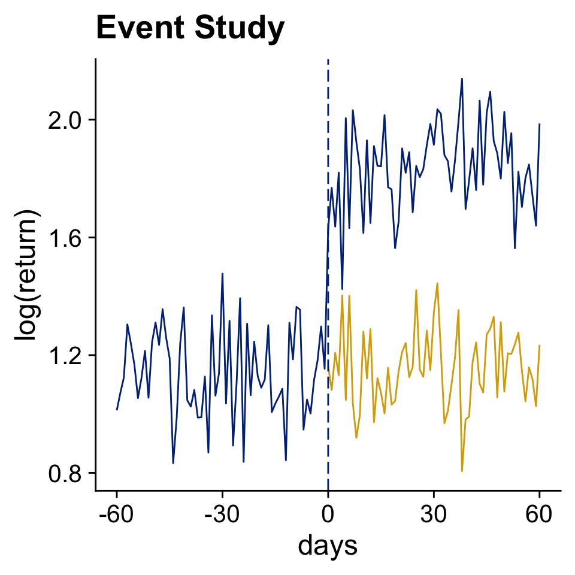
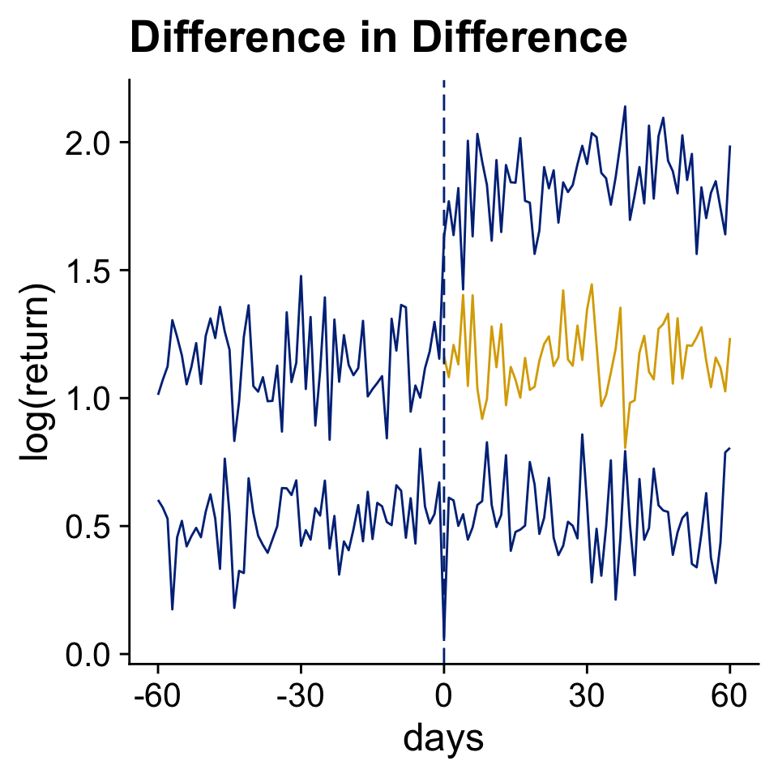

Research Design 2: Event Studies and Difference-in-Difference
Event Studies
A basic before - after comparison
Chapter 17 Event Studies in Huntington-Klein (2021)
Use Data Before The Event to Infer The Counterfactual Outcome (in Yellow)


Front-running, information leaking, and anticipation are all annoying.
Difference-in-Difference
What if we had an additional control group to estimate the counterfactual?


A Simulated Cheap Talk Example: Voluntary Disclosure in Time 2
N <- 500
T <- 2
time_effect <- c(3.5, 0)
rd_did_firm <- tibble(
firm = 1:N,
performance = runif(N, 1, 10),
firm_effect = rnorm(N, 0, 2) + ifelse(performance < 3, 3, 0)
)
rd_did_panel <- tibble(
firm = rep(1:N, each = T),
time = rep(1:T, times = N)) %>%
left_join(rd_did_firm, by = "firm") %>%
mutate(
report = ifelse(time == 2, ifelse(performance > 3, 1, 0), 0),
noise = rnorm(N*T, 0, 3),
profit_report = 6.5 + time_effect[time] + firm_effect + noise,
profit_no_report = 1.5 + time_effect[time] + firm_effect + noise,
actual_profit = ifelse(report == 1, profit_report, profit_no_report))The Causal Effects in Our Simulation
rd_did_panel %>%
mutate(causal_effect = profit_report - profit_no_report) %>%
group_by(time, report2 = performance > 3) %>%
summarise(profit_report = mean(profit_report),
profit_no_report = mean(profit_no_report),
causal_effect = mean(causal_effect)) %>%
kable(digits = 1)| time | report2 | profit_report | profit_no_report | causal_effect |
|---|---|---|---|---|
| 1 | FALSE | 12.9 | 7.9 | 5 |
| 1 | TRUE | 9.8 | 4.8 | 5 |
| 2 | FALSE | 9.4 | 4.4 | 5 |
| 2 | TRUE | 6.4 | 1.4 | 5 |
A Summary of The Actual Profits
Regressions
did_lm <- feols(actual_profit ~ report, data = rd_did_panel)
did_sub <- feols(actual_profit ~ report, data = filter(rd_did_panel, time == 2))
did_fixed <- feols(actual_profit ~ report | firm, data = rd_did_panel)
did_did <- feols(actual_profit ~ report | firm + time, data = rd_did_panel)
msummary(list(simple = did_lm, "time 2" = did_sub, "firm FE" = did_fixed, "two-way FE" = did_did),
gof_omit = gof_omit, stars = stars)| simple | time 2 | firm FE | two-way FE | |
|---|---|---|---|---|
| (Intercept) | 5.396*** | 4.442*** | ||
| (0.141) | (0.281) | |||
| report | 0.970*** | 1.924*** | 1.546*** | 4.969*** |
| (0.235) | (0.330) | (0.218) | (0.422) | |
| Num.Obs. | 1000 | 500 | 1000 | 1000 |
| R2 | 0.017 | 0.064 | 0.602 | 0.664 |
| R2 Within | 0.078 | 0.221 | ||
| RMSE | 3.56 | 3.30 | 2.27 | 2.08 |
| Std.Errors | IID | IID | by: firm | by: firm |
| FE: firm | X | X | ||
| FE: time | X | |||
| * p < 0.1, ** p < 0.05, *** p < 0.01 |
What if we have three periods?
Note
We assume that over time investors and regulators get better at detecting when firms exaggerate in their report.
- Time 1: Reports are not believable, nobody reports
- Time 2: The biggest exaggerations will be caught, only well performing firms will report and communicate that they are doing excellent.
- Time 3: More subtle exaggerations will be caught. The worst performers will not report at all, the moderate performers will report and say that they will do well, the good performers will report that they are doing excellent.
Setup of three period simulation
N <- 1000
T <- 3
cutoff2 <- 3 # performance cutoff to report for time 1
cutoff3 <- c(4/3, 4 + 2/3) # performance cutoff to report for time 2
profit1 <- 5
profit2 <- c(1.5, 6.5) #Profits for time 2 depending on report
profit3 <- c(2/3, 3, 7 + 1/3) #Profits for time 2 depending on report
rd_did3_firm <- tibble(
firm = 1:N,
performance = runif(N, 0, 10),
firm_effect = rnorm(N, 0, 2) + ifelse(performance < cutoff2, 3, 0)
)Three period simulation
rd_did3_panel <- tibble(
firm = rep(1:N, each = T),
time = rep(1:T, times = N)) %>%
left_join(rd_did3_firm, by = "firm") %>%
mutate(
# When will firms report?
report = case_when(
time == 1 ~ 0,
time == 2 & performance < cutoff2 ~ 0,
time == 3 & performance < cutoff3[1] ~ 0,
TRUE ~ 1),
noise = rnorm(T*N, 0, 5),
profit_no_report = firm_effect + noise +
case_when(
time == 1 ~ profit1,
time == 2 ~ profit2[1],
time == 3 ~ profit3[1]
),
profit_report = firm_effect + noise +
case_when(
time == 1 ~ profit1,
time == 2 ~ profit2[2],
time == 3 & performance < cutoff3[2] ~ profit3[2],
TRUE ~ profit3[3]
),
actual_profit = ifelse(report == 1, profit_report, profit_no_report)
)Overview of 4 groups of firms
- Never reporters
- Reporters in year 3
- Reporters in year 2 and 3 (Medium)
- Reporters in year 2 and 3 (High)
causal_effects <- rd_did3_panel %>%
mutate(causal_effect = profit_report - profit_no_report,
group = case_when(
performance < cutoff3[1] ~ 1,
performance < cutoff2 ~ 2,
performance < cutoff3[2] ~ 3,
TRUE ~ 4
)) %>%
group_by(time, group) %>%
summarise(report = mean(report),
N = n(),
M_report = mean(profit_report),
M_no_report = mean(profit_no_report),
M_causal_effect = mean(causal_effect))Overview of 4 groups of firms
| time | group | report | N | M_report | M_no_report | M_causal_effect |
|---|---|---|---|---|---|---|
| 1 | 1 | 0 | 138 | 7.3 | 7.3 | 0.0 |
| 1 | 2 | 0 | 173 | 7.8 | 7.8 | 0.0 |
| 1 | 3 | 0 | 148 | 5.1 | 5.1 | 0.0 |
| 1 | 4 | 0 | 541 | 5.0 | 5.0 | 0.0 |
| 2 | 1 | 0 | 138 | 9.3 | 4.3 | 5.0 |
| 2 | 2 | 0 | 173 | 9.6 | 4.6 | 5.0 |
| 2 | 3 | 1 | 148 | 6.6 | 1.6 | 5.0 |
| 2 | 4 | 1 | 541 | 6.6 | 1.6 | 5.0 |
| 3 | 1 | 0 | 138 | 5.8 | 3.5 | 2.3 |
| 3 | 2 | 1 | 173 | 6.2 | 3.9 | 2.3 |
| 3 | 3 | 1 | 148 | 2.5 | 0.1 | 2.3 |
| 3 | 4 | 1 | 541 | 7.1 | 0.4 | 6.7 |
Two-way Fixed Effects
Separate 2 by 2 effects are larger than the total sample effect
msummary(list("time 1 and 2" = twoway12, "time 1 and 3" = twoway13,
"time 1, 2 and 3" = twoway123), gof_omit = gof_omit,
stars = c("*" = .1, "**" = .05, "***" = .01))| time 1 and 2 | time 1 and 3 | time 1, 2 and 3 | |
|---|---|---|---|
| report | 4.709*** | 4.349*** | 3.856*** |
| (0.490) | (0.669) | (0.419) | |
| Num.Obs. | 2000 | 2000 | 3000 |
| R2 | 0.589 | 0.566 | 0.428 |
| R2 Within | 0.090 | 0.041 | 0.044 |
| RMSE | 3.47 | 3.64 | 4.14 |
| Std.Errors | by: firm | by: firm | by: firm |
| FE: firm | X | X | X |
| FE: time | X | X | X |
| * p < 0.1, ** p < 0.05, *** p < 0.01 |
Baker, Larcker, and Wang (2022)
The paper is forthcoming in JFE but available on ssrn
Problem Statement
Finally, when research settings combine staggered timing of treatment effects and treatment effect heterogeneity across firms or over time, staggered DiD estimates are likely to be biased. In fact, these estimates can produce the wrong sign altogether compared to the true average treatment effects.
Solution
While the literature has not settled on a standard, the proposed solutions all deal with the biases arising from the bad comparisons problem inherent in TWFE DiD regressions by modifying the set of effective comparison units in the treatment effect estimation process. For example, each alternative estimator ensures that firms receiving treatment are not compared to those that previously received it.
Simulation Setup - The True Average Treatment Effect of Three Groups
The Estimated Effect by Twoway Fixed Effects of 500 Simulations
The Sun and Abraham (2021) Solution - Restrict The Sample
The Estimated Effect with the Sun and Abraham Solution
Sun and Abraham in Practice
treatment_group: first year of treatmentyear: calendar year
[1] "year::-18:cohort::1998" "year::-17:cohort::1998" "year::-16:cohort::1998"
[4] "year::-15:cohort::1998" "year::-14:cohort::1998" "year::-13:cohort::1998"
[7] "year::-12:cohort::1998" "year::-11:cohort::1998" "year::-10:cohort::1998"
[10] "year::-9:cohort::1989" "year::-9:cohort::1998" "year::-8:cohort::1989"
[13] "year::-8:cohort::1998" "year::-7:cohort::1989" "year::-7:cohort::1998"
[16] "year::-6:cohort::1989" "year::-6:cohort::1998" "year::-5:cohort::1989"
[19] "year::-5:cohort::1998" "year::-4:cohort::1989" "year::-4:cohort::1998"
[22] "year::-3:cohort::1989" "year::-3:cohort::1998" "year::-2:cohort::1989"
[25] "year::-2:cohort::1998" "year::0:cohort::1989" "year::0:cohort::1998"
[28] "year::1:cohort::1989" "year::1:cohort::1998" "year::2:cohort::1989"
[31] "year::2:cohort::1998" "year::3:cohort::1989" "year::3:cohort::1998"
[34] "year::4:cohort::1989" "year::4:cohort::1998" "year::5:cohort::1989"
[37] "year::5:cohort::1998" Sun and Abraham - Relative Year
msummary(sa_fe, gof_omit = gof_omit, stars = stars, statistic = NULL,
estimate = "{estimate} ({std.error}) {stars}", coef_omit = "-1")| (1) | |
|---|---|
| year = -9 | 0.003 (0.006) |
| year = -8 | 0.001 (0.005) |
| year = -7 | 0.001 (0.006) |
| year = -6 | 0.002 (0.005) |
| year = -5 | 0.005 (0.005) |
| year = -4 | 0.003 (0.005) |
| year = -3 | 0.004 (0.004) |
| year = -2 | 0.010 (0.006) |
| year = 0 | 0.011 (0.005) * |
| year = 1 | 0.025 (0.006) *** |
| year = 2 | 0.042 (0.006) *** |
| year = 3 | 0.055 (0.005) *** |
| year = 4 | 0.062 (0.005) *** |
| year = 5 | 0.082 (0.006) *** |
| Num.Obs. | 119996 |
| R2 | 0.727 |
| R2 Within | 0.005 |
| RMSE | 0.17 |
| Std.Errors | by: state |
| FE: firm | X |
| FE: year | X |
Sun and Abraham - Relative Year

Sun and Abraham - ATT
Sun and Abraham - Cohort Effects
Take-away Lessons
Note
- Simulations are good!
- Everything is a regression (Ok, not really)
- Not all the data should go in the regression
When should you cluster standard errors?
Abadie et al. (2017)
Note
What is the level of the treatment variable? What is the comparison?
- Mixed race or same-sex race
- State legislation
- Country legislation
- Firm corporate governance changes